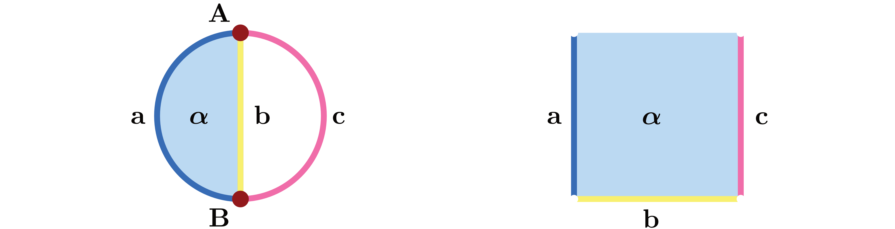
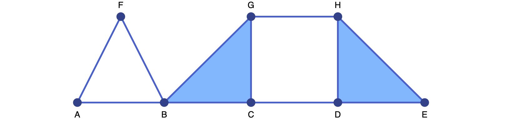
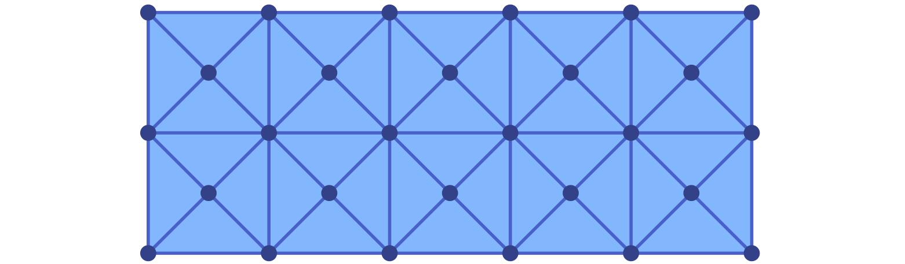
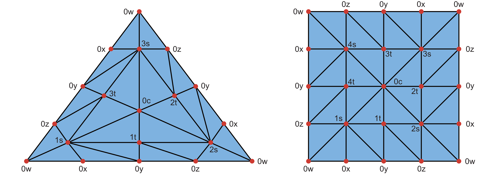
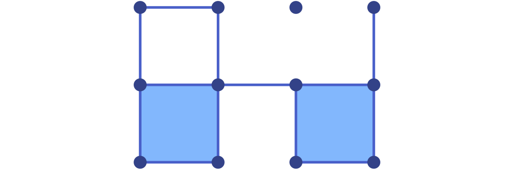
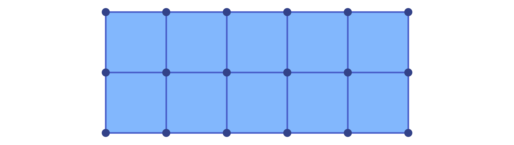
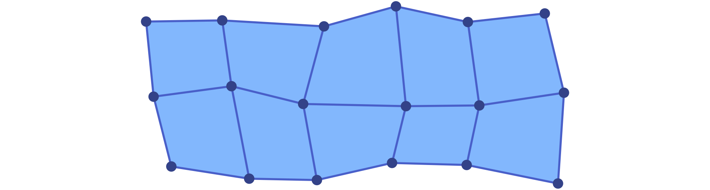

Lefschetz Complexes
The fundamental structure underlying the functionality of ConleyDynamics.jl is a Lefschetz complex. It provides us with the basic model of phase space for combinatorial topological dynamics. In view of the combinatorial, and therefore discrete, character of the dynamical behavior, a Lefschetz complex is not a typical phase space in the sense of classical dynamics. While the latter one is usually a Euclidean space, a Lefschetz complex is basically a combinatorial model of it. In the following, we provide its precise mathematical definition, and explain how it can be created and modified within the package. We also discuss two important special cases, namely simplicial complexes and cubical complexes.
Basic Lefschetz Terminology
The original definition of a Lefschetz complex can be found in [Lef42], where it was simply referred to as a complex.
Let $F$ denote an arbitrary field. Then a pair $(X,\kappa)$ is called a Lefschetz complex over $F$ if $X = (X_k)_{k \in \mathbb{N}_0}$ is a finite set with $\mathbb{N}_0$-gradation, and $\kappa : X \times X \to F$ is a mapping such that
\[ \kappa(x,y) \neq 0 \quad\mathrm{ implies }\quad x \in X_k \quad\mathrm{ and }\quad y \in X_{k-1},\]
and such that for any $x,z \in X$ one has
\[ \sum_{y \in X} \kappa(x,y) \kappa(y,z) = 0 \; .\]
The elements of $X$ are referred to as cells, the value $\kappa(x,y) \in F$ is called the incidence coefficient of the cells $x$ and $y$, and the map $\kappa$ is the incidence coefficient map. In addition, one defines the dimension of a cell $x\in X_k$ as the integer $k$, and denotes it by $k = \dim x$. Whenever the incidence coefficient map is clear from context, we often just refer to $X$ as the Lefschetz complex.
At first glance the above definition can seem daunting. However, it is based on a straightforward geometric idea. A Lefschetz complex is a structure that is built from elementary building blocks called cells. Each cell has a dimension associated with it, and it is topologically an open ball of this dimension. Thus, cells of dimension zero are points, also called vertices. Cells of dimension one are open curve segments, which we call edges, and two-dimensional cells are called faces and take the form of open two-dimensional membranes.
The incidence coefficient map encodes how these cells are glued together to form the Lefschetz complex $X$. In order to shed more light on this, consider the boundary map $\partial$ which is defined on cells via
\[ \partial x = \sum_{y \in X} \kappa(x,y) y \; .\]
This map sends a cell $x$ of dimension $k$ to a specific linear combination of cells of dimension $k-1$, called the boundary of $x$. By using ideas from linear algebra, the boundary map can be extended to map a general linear combination of $k$-dimensional cells to the corresponding linear combination of the separate boundaries. For example, if one chooses the field $F = \mathbb{Q}$ of rationals, one has $\partial (x_1 - 2x_2) = \partial x_1 - 2 \partial x_2$. Notice that using this extended definition of the boundary map, one can rewrite the summation condition in the definition of a Lefschetz complex in the equivalent form
\[ \partial( \partial x) = 0 \quad\text{ for all cells }\quad x \in X \; .\]
In other words, the boundary of any cell is itself boundaryless.
With the help of the boundary map, one can often infer the overall geometric structure of a Lefschetz complex $X$. For this, think of a Lefschetz complex as being build from the ground up in the following way. First, start by putting down all vertices of $X$ at different locations in some ambient space. Since the boundary of each one-dimensional cell is made up of a linear combination of vertices, one can then add a curve segment for each one-dimensional cell, which connects the vertices in its boundary. Note that in the general version of a Lefschetz complex it is possible that an edge has only one vertex in its boundary, or maybe even none, and in these cases the edge is either only connected to the one boundary vertex, or it is an open curve segment connected to no vertex at all, respectively. Continue in this fashion to add two-dimensional faces to fill in the space between the edges in its boundary, and so on for higher dimensions. Needless to say, in the case of a general complicated Lefschetz complex this procedure is of limited use, since the boundary of a cell can be an arbitrary linear combination of cells, with coefficients that can be any nonzero numbers in the field $F$. Yet, in many simple cases the above intuition is sufficient.
In addition to the Lefschetz complex definition, there are a handful of other concepts which will be important for our discussion of Lefschetz complexes. Specifically, the following notions are important:
- A facet of a cell $x \in X$ is any cell $y$ which satisfies $\kappa(x,y) \neq 0$.
- One can define a partial order on the cells of $X$ by letting $x \le y$ if and only if for some integer $n \in \mathbb{N}$ there exist cells $x = x_1, \ldots, x_n = y$ such that $x_k$ is a facet of $x_{k+1}$ for all $k = 1, \ldots, n-1$. It is not difficult to show that this defines a partial order on $X$, i.e., this relation is reflexive, antisymmetric, and transitive. We call this partial order the face relation. Moreover, if $x \le y$ then $x$ is called a face of $y$.
- A subset $C \subset X$ of a Lefschetz complex is called closed, if for every $x \in C$ all the faces of the cell $x$ are also contained in the subset $C$.
- The closure of a subset $C \subset X$ is the collection of all faces of all cells in $C$, and it is denoted by $\mathrm{cl}\, C$. Thus, a subset of a Lefschetz complex is closed if and only if it equals its closure.
- A subset $S \subset X$ is called locally closed, if its mouth $\mathrm{mo}\, S = \mathrm{cl}\, S \setminus S$ is closed. Note that every closed set is automatically locally closed, but the reverse implication is usually false.
While the first two points merely introduce notation for describing the combinatorial boundary of cells, the remaining three points establish important topological concepts. In fact, the above definition of closedness defines a topology on the Lefschetz complex $X$, which is the so-called Alexandrov topology from [Ale37]. As usual in the field of topology, a subset of a Lefschetz complex will be called open, if and only if its complement is closed.
We would like to point out that while the concept of local closedness is rarely considered in standard topology courses, it is of utmost important for the study of combinatorial topological dynamics. For the moment, we just mention the following result:
Let $X$ be a Lefschetz complex over a field $F$, and let $\kappa : X \times X \to F$ denote its incidence coefficient map. Then a subset $S \subset X$ is again a Lefschetz complex, with respect to the restriction of $\kappa$ to $S \times S$, if the subset $S$ is locally closed.
This result goes back to [MB09, Theorem 3.1]. In other words, in the category of Lefschetz complexes local closedness arises naturally. Due to its importance, we also mention the following two equivalent formulations:
- A subset $S \subset X$ is locally closed, if and only if it is the difference of two closed subsets of $X$.
- A subset $S \subset X$ is locally closed, if and only if it is an interval with respect to the face relation on $X$, i.e., whenever we have three cells with $S \ni x \le y \le z \in S$, then one has to have $y \in S$ as well.
The proof of these characterizations can be found in [MW25, Proposition 3.2.1] and [LKMW23, Proposition 3.10], respectively.
Lefschetz complexes are a very general mathematical concept, and they can be rather confusing at first sight. Nevertheless, they do encompass other complex types, which are more geometric in nature. As we already saw in the tutorial, every simplicial complex is automatically a Lefschetz complex, and we will further elaborate on this connection below. In addition, we will also demonstrate that cubical complexes are Lefschetz complexes. More general, any regular CW complex is a Lefschetz complex as well. For more details on this, we refer to the definition in [Mas91] and the discussion in [DKMW11].
Lefschetz Complex Data Structure
For the efficient and easy manipulation of Lefschetz complexes in ConleyDynamics.jl we make use of a specific composite data type:
ConleyDynamics.LefschetzComplex — Type
LefschetzComplexCollect the Lefschetz complex information in a struct.
The struct is created via the following fields:
labels::Vector{String}: Vector of labels associated with cell indicesdimensions::Vector{Int}: Vector cell dimensionsboundary::SparseMatrix: Boundary matrix, columns give the cell boundaries
It is expected that the dimensions are given in increasing order, and that the square of the boundary matrix is zero. Otherwise, exceptions are raised. In addition, the following fields are created during initialization:
ncells::Int: Number of cellsdim::Int: Dimension of the complexindices::Dict{String,Int}: Dictionary for finding cell index from label
The coefficient field is specified by the boundary matrix.
The fields of this struct relate to the mathematical definition of a Lefschetz complex $X$ in the following way:
- Internally, every cell of the Lefschetz complex is represented by an integer between 1 and the total number of cells. However, in order to make it easier to interpret the results of computations, each cell in a Lefschetz complex has to also be given a label. These labels are contained in the field
labels::Vector{String}, wherelabels[k]gives the label of cellk. - The vector
dimensionsis aVector{Int}and collects the dimensions of the cells. In other words, the cell which is indexed by the integerkhas dimensiondimensions[k]. It is expected that the dimension vector is increasing, and the constructor method will verify this. Otherwise, an error is triggered. - The incidence coefficient map $\kappa$ is encoded in the sparse matrix
boundary. This matrix is a square matrix withncellsrows and columns. The $k$-th column contains the incidence coefficients $\kappa(k,\cdot)$ in the sense that the entry in row $m$ and column $k$ equals the value $\kappa(k,m)$. Since for most Lefschetz complexes the majority of the incidence coefficients is zero, the matrix is represented using the sparse formatSparseMatrix, which is described in more detail in Sparse Matrices. An exception is raised if the square of the boundary matrix is not zero.
When creating a Lefschetz complex, only the above three items have to be specified, as they define a unique Lefschetz complex $X$. In other words, a Lefschetz complex is generally created via the command
lc = LefschetzComplex(labels, dimensions, boundary)During the construction of the Julia object, additional fields are initialized which simplify working with a Lefschetz complex:
- The integer
ncellsgives the total number of cells in $X$. Internally, these cells are numbered by integers ranging from1toncells. - The integer
dimdescribes the overall dimension of the Lefschetz complex, which is the largest dimension of a cell. - In order to easily determine the integer index for a cell with a specific label, the field
indicescontains a dictionary of typeDict{String,Int}which maps labels to indices. For example, if a cell has the label"124.010", then the associated integer index is given byindices["124.010"].
As mentioned above, note however that an object of type LefschetzComplex is created by passing only the first three the field items in the order given in LefschetzComplex. Consider for example the Lefschetz complex from Figure 2.4 in [MW25], see also the left complex in the next image. This complex consists of six cells with labels A, B, a, b, c, and alpha, and we initialize the vector of labels, the cell index dictionary, and the cell dimensions via the commands
ncL = 6
labelsL = Vector{String}(["A","B","a","b","c","alpha"])
cdimsL = [0, 0, 1, 1, 1, 2]The boundary matrix can then be defined using
bndmatrixL = zeros(Int, ncL, ncL)
bndmatrixL[[1,2],3] = [1; 1] # a
bndmatrixL[[1,2],4] = [1; 1] # b
bndmatrixL[[1,2],5] = [1; 1] # c
bndmatrixL[[3,4],6] = [1; 1] # alpha
bndsparseL = sparse_from_full(bndmatrixL, p=2)Notice that we first create the matrix as a regular integer matrix, and then use the function sparse_from_full to turn it into sparse format over the field $GF(2)$ with characteristic p = 2. This is the most convenient method for small boundary matrices, yet for larger ones it is better to use the function sparse_from_lists. Finally, the Lefschetz complex is created using
lcL = LefschetzComplex(labelsL, cdimsL, bndsparseL)
Lefschetz complexes do not always have to contain cells of all dimensions. For example, the Lefschetz complex shown on the right side of the figure has no vertices, and it can be created using the commands
ncR = 4
labelsR = Vector{String}(["a","b","c","alpha"])
cdimsR = [1, 1, 1, 2]
bndmatrixR = zeros(Int, ncR, ncR)
bndmatrixR[[1,2,3],4] = [1; 1; 1] # alpha
bndsparseR = sparse_from_full(bndmatrixR, p=2)
lcR = LefschetzComplex(labelsR, cdimsR, bndsparseR)While Lefschetz complexes can always be created in ConleyDynamics.jl in this direct way, it is often more convenient to make use of special types, such as simplicial and cubical complexes, and then restrict the complex to a locally closed set using the function lefschetz_subcomplex. As an alternative, if one is interested in a fairly small Lefschetz complex over the field $GF(2)$, then the following special function can be used:
create_lefschetz_gf2creates a Lefschetz complex over the two-element field $GF(2)$ by specifying its essential cells and boundaries. The input argumentdefcellbndof the function has to be a vector of vectors. Each entrydefcellbnd[k]then has to be of one of the following two forms:[String, Int, String, String, ...]: The firstStringcontains the label for the cellk, followed by its dimension in the second entry. The remaining entries are for the labels of the cells which make up the boundary.[String, Int]: This shorther form is for cells with empty boundary. The first entry denotes the cell label, and the second its dimension.
Using this function, our earlier Lefschetz complex lcL can be created using the commands
defcellbndL = [["a",1,"A","B"], ["b",1,"A","B"], ["c",1,"A","B"], ["alpha",2,"a","b"]]
lcL = create_lefschetz_gf2(defcellbndL)while the Lefschetz complex lcR is defined via
defcellbndR = [["alpha",2,"a","b","c"], ["a",1], ["b",1], ["c",1]]
lcR = create_lefschetz_gf2(defcellbndR)Simplicial Complexes
One of the earliest types of complexes that have been studied in topology are simplicial complexes. As already mentioned in the tutorial, an abstract simplicial complex $X$ is a finite collection of finite sets, called simplices, which is closed under taking subsets. Each simplex $\sigma$ has a dimension $\dim\sigma$, which is one less than the number of its elements.
In order to see why every simplicial complex is automatically a Lefschetz complex, we need to be able to define the incidence coefficient map $\kappa$. For this, we make use of some notions from [Mun84]. Let $X_0$ denote the collection of all vertices of the simplicial complex $X$. Then we use the notation
\[ \sigma = \left[ v_0, v_1, \ldots, v_d \right] \quad\text{ with }\quad v_k \in X_0\]
to describe a $d$-dimensional simplex. Note that even though every simplex in $X$ is just the set of its vertices, in the above representation we pick an order of the vertices, called an orientation of the simplex. This orientation can be chosen arbitrarily, and there are two equivalence classes of orientations. To get from one orientation to the other, one just has to exchange two vertices, and we write
\[ \left[ \ldots, v_i, \ldots, v_j, \ldots \right] \; = \; -\left[ \ldots, v_j, \ldots, v_i, \ldots \right] \; .\]
For more complicated reorderings, one has to represent the corresponding vertex permutation as a sequence of such exchanges. Using these oriented simplices we can define the boundary operator
\[ \partial \sigma \; = \; \partial \left[ v_0, \ldots, v_d \right] \; = \; \sum_{i=0}^d (-1)^i \left[ v_0, \ldots, \hat{v}_i, \ldots, v_d \right] \; ,\]
where the notation $\hat{v}_i$ means that in the simplex behind the summation sign on the right-hand side the vertex $v_i$ is omitted. For example, for a two-dimensional simplex one obtains
\[ \partial \left[ v_0, v_1, v_2 \right] \; = \; \left[ v_1, v_2 \right] - \left[ v_0, v_2 \right] + \left[ v_0, v_1 \right] \; .\]
Thus, if one chooses a total order of all the vertices in the simplicial complex, and orients the individual simplices in such a way that their vertices are arranged using this overall order, then the incidence coefficient map is given by
\[ \kappa \left( \left[ v_0, \ldots, v_i, \ldots, v_d \right], \; \left[ v_0, \ldots, \hat{v}_i, \ldots, v_d \right] \right) \; = \; (-1)^i \; .\]
If some or all of the simplices are represented by different orientations, one simply has to multiply the value $(-1)^i$ by the sign of a suitable vertex permutation. In either case, one can show that the so-defined map $\kappa$ does indeed satisfy the definition of a Lefschetz complex. For more details, see [Mun84, Lemma 5.3].
In ConleyDynamics.jl there are three basic commands for defining a simplicial complex:
create_simplicial_complexis the most general method, and it expects two input arguments. The first is usually calledlabels, and it has to have the data typeVector{String}. This vector lists the labels for each vertex. It is important that all of these labels have exactly the same number of characters. The second argument is usually calledsimplices, and it lists as many simplices as necessary for defining the underlying simplicial complex. This means that in practice one only needs to include the simplices which are not faces of higher-dimensional ones, see also the example below. The variablesimplicescan either be of typeVector{Vector{String}}orVector{Vector{Int}}, depending on whether the vertices are identified via their labels or integer indices, respectively. Finally, the optional parameterpcan be used to specify the underlying field for the boundary matrix. Ifpis a prime, then $F = GF(p)$, while forp = 0the function uses $F = \mathbb{Q}$. If the argumentpis ommitted, the function defaults top = 2.create_simplicial_rectangleexpects two integer argumentsnxandny, and then creates a triangulation of the square $[0,nx] \times [0,ny]$ by subdividing every unit square into four triangles which meet at the center of the square. As before, the optional parameterpspecifies the underlying field.create_simplicial_delaunaycreates a planar Delaunay triangulation inside a planar rectangle. The function selects a random sample of points inside the box, while either trying to maintain a minimum distance between the points, or just using a prespecified number of points. More details on these two options can be found in the documentation for the function.
To illustrate the first of these functions, consider the commands
labels = ["A","B","C","D","E","F","G","H"]
simplices = [["A","B"],["A","F"],["B","F"],["B","C","G"],["D","E","H"],["C","D"],["G","H"]]
sc = create_simplicial_complex(labels,simplices)These create the simplicial complex sc, in the form of a Lefschetz complex. Note that the above commands only specify the labels for the vertices. The labels for simplices of dimension at least one are automatically generated by concatenating the labels for their vertices, sorted in lexicographic order. This can be seen in the following Julia output:
julia> sc.labels[end-4:end]
5-element Vector{String}:
"DH"
"EH"
"GH"
"BCG"
"DEH"The simplicial complex sc can be visualized using the commands
coords = [[0,0],[2,0],[4,0],[6,0],[8,0],[1,2],[4,2],[6,2]]
ldir = [3,3,3,3,3,1,1,1]
fname = "lefschetzex2.pdf"
plot_planar_simplicial(sc,coords,fname,labeldir=ldir,labeldis=10,hfac=2,vfac=1.5,sfac=50)
Similarly, the commands
sc2, coords2 = create_simplicial_rectangle(5,2)
fname2 = "lefschetzex3.pdf"
plot_planar_simplicial(sc2,coords2,fname2,hfac=2.0,vfac=1.2,sfac=75)define and illustrate a second simplicial complex, which triangularizes a rectangle in the plane.

For a demonstration of the Delaunay triangulation approach, please see Analyzing Planar Vector Fields.
In addition to the above methods, ConleyDynamics.jl also provides a few special simplicial complexes for illustration purposes:
simplicial_torusconstructs a triangulation of the two-dimensional torus.simplicial_klein_bottlereturns a triangulation of the two-dimensional Klein bottle.simplicial_projective_planeconstructs a triangulation of the projective plane.simplicial_torsion_spacereturns a simplicial complex $K$ with the integer homology groups $H_0(K) \cong {\mathbb Z}$, as well as $H_1(K) \cong {\mathbb Z}_n$ and $H_2(K) \cong 0$. In other words, this simplicial complex has nontrivial torsion in dimension 1. For $n = 3$ and $n = 4$ these triangulations are shown in the following figure. Notice that points with the same label have to be identified. This vertex naming scheme is the same as is used in the function.

These examples can be used to illustrate homology over different fields.
Cubical Complexes
The second important special case of a Lefschetz complex is called cubical complex, and it has been discussed in detail in [KMM04]. In the following, we only present the definitions that are essential for our purposes.
Loosely speaking, a cubical complex is a collection of cubes of varying dimensions in some Euclidean space $\mathbb{R}^d$. More precisely, we say that an interval $I \subset \mathbb{R}$ is an elementary interval if it is of the form
\[ I = [\ell, \ell+1] \quad\text{ or }\quad I = [\ell, \ell] \quad\text{ for some integer }\quad \ell \in \mathbb{Z} \; .\]
If the elementary interval $I$ consists of only one point, then it is called degenerate, and it is nondegenerate if it is of length one. Elementary intervals are the building blocks for the cubes in a cubical complex. For a complex in $\mathbb{R}^d$, an elementary cube $Q$ is of the form
\[ Q \; = \; I_1 \times I_2 \times \ldots \times I_d \; \subset \; \mathbb{R}^d \; ,\]
where $I_1, \ldots, I_d$ are elementary intervals. The dimension $\dim Q$ of an elementary cube is given by the number of nondegenerate intervals in its representation. For example, the cube $Q = [0,0] \times [1,1]$ is a zero-dimensional elementary cube in $\mathbb{R}^2$ which contains only the point $(0,1)$, while the elementary cube $R = [2,2] \times [3,4]$ is one-dimensional, and consists of the closed vertical line segment between the points $(2,3)$ and $(2,4)$.
After these preparations, the definition of a cubical complex is now straightforward. A cubical complex $X$ in $\mathbb{R}^d$ is a finite collection of elementary cubes in $\mathbb{R}^d$ which is closed under the inclusion of elementary subcubes. More precisely, if $Q \in X$ is an elementary cube in the cubical complex, and if $R \subset Q$ is any elementary cube contained in $Q$, then one also has $R \in X$.
The definition of a cubical complex is reminiscent of that of a simplicial complex. It is therefore not surprising that also in the cubical case one can describe the incidence coefficient map $\kappa$ explicitly, and thus recognize a cubical complex as a Lefschetz complex. For this, we need more notation.
Let $Q = I_1 \times I_2 \times \ldots \times I_d$ denote an elementary cube, and let the nondegenerate elementary intervals in this decomposition be given by $I_{i_1}, \ldots, I_{i_n}$, where $I_{i_j} = [k_j, k_j + 1]$ and $j = 1,\ldots,n = \dim Q$. For every index $j$, we further define the two $(n-1)$-dimensional elementary cubes
\[ \begin{array}{ccccccc} Q_j^- & = & I_1 \times \ldots \times I_{i_j - 1} & \times & [k_j, k_j] & \times & I_{i_j + 1} \times \ldots \times I_d \; , \\[2ex] Q_j^+ & = & I_1 \times \ldots \times I_{i_j - 1} & \times & [k_j + 1, k_j + 1] & \times & I_{i_j + 1} \times \ldots \times I_d \; . \end{array}\]
Geometrically, the two elementary cubes $Q_j^-$ and $Q_j^+$ are directly opposite sides of the elementary cube $Q$. Using them, one can define the algebraic boundary of the cube as
\[ \partial Q \; = \; \sum_{j=1}^n (-1)^{j-1} \left( Q_j^+ - Q_j^- \right) .\]
This formula is the cubical analogue of the boundary operator in a simplicial complex, and it allows us to define the incidence coefficient map via
\[ \kappa\left( Q, \, Q_j^+ \right) \; = \; (-1)^{j-1} \quad\text{ and }\quad \kappa\left( Q, \, Q_j^- \right) \; = \; (-1)^j \; , \quad\text{ for all }\quad j = 1, \ldots, n \; .\]
For all remaining pairs of elementary cubes in $X$ we let $\kappa = 0$. Then it was shown in [KMM04, Proposition 2.37] that the so-defined incidence coefficient map satisfies the summation condition in the definition of a Lefschetz complex, i.e., we have $\partial(\partial Q) = 0$ for every $Q \in X$. This in turn implies that every cubical complex is indeed a Lefschetz complex.
Cubical complexes in ConleyDynamics.jl are a little more restricted. Since a cubical complex in the above sense is always finite, one can assume without loss of generality that the left endpoints of all involved elementary intervals are nonnegative. In other words, we always assume that the cubical complex only contains elementary cubes from the set $(\mathbb{R}_0^+)^d$. This allows for a simple encoding of elementary cubes via labels of a fixed length, and without having to worry about the sign of an integer.
To describe this, fix a dimension $d$ of the ambient space. Then every elementary cube in $(\mathbb{R}_0^+)^d$ has the following label, which depends on a coordinate width $L$:
- The first $d \cdot L$ characters of the label encode the starting points of the elementary intervals $I_1, \ldots, I_d$ in the standard representation of the elementary cube. For this, the starting points, which are nonnegative integers, are concatenated without spaces, but with leading zeros. For example, with $L = 2$ the string
"010203"would correspond to the starting points $1$, $2$, and $3$. Note that for given coordinate width $L$, one can only encode starting points between $0$ and $10^L-1$. - The next entry in the label string is a period
.. - The remaining $d$ characters of the string are integers 0 or 1, which give the interval lengths of $I_1, \ldots, I_d$.
For example, for $L = 2$ the string "030600.000" corresponds to the point $(3,6,0)$ in three dimensions. Similarly, the label "030600.101" represents the two-dimensional elementary cube $[3,4] \times [6,6] \times [0,1] \subset \mathbb{R}^3$. Note, however, that the label representation is not unique, since it depends on the coordinate width $L$. Thus, with $L = 1$ the latter cube could also be written as "360.101", or with $L = 3$ as "003006000.101". As we will see in a moment, though, within a given cubical complex all labels have to use the same coordinate width $L$! This implies in particular that for a given coordinate width $L$ one can only represent bounded cubical complexes which are contained in the $d$-dimensional box $[0,10^L-1]^d$.
The following three helper functions simplify the work with these types of cube labels:
cube_field_sizedetermines the field sizes of a given cube label. The first return value gives the dimension $d$ of the ambient space, while the second value returns the coordinate width $L$.cube_informationreturns all information encoded in the cube label. The function returns an integer vector of length $2d+1$, where $d$ is the dimension of the ambient space. The first $d$ entries give the vector of elementary interval starting points, while the next $d$ values yield the corresponding interval lengths. The last entry specifies the dimension of the cube.cube_labelcreates a label from a cube's coordinate information. As function parameters, one has to specify $d$ and $L$, and then pass an integer vector of length six which specifies the coordinates of the starting points and the interval lengths as in the previous item.
In ConleyDynamics.jl there are four basic commands for defining a cubical complex and working with it:
create_cubical_complexcreates a cubical complex in the Lefschetz complex data format. The complex is specified via a list of all the highest-dimensional cubes which are necessary to define the cubical complex. For this, every cube has to be given using the above-described special label format, with the same coordinate width $L$. In other words, all label strings have to be of the same length! If the optional parameterpis specified, the complex will be defined over a field with characteristicp, analogous to the case of a simplicial complex. If the characteristic is not specified, then the function defaults to the field $GF(2)$.get_cubical_coordsdetermines the coordinates of all vertices of a given cubical complex from the cube labels. This vector can then be used for plotting purposes, see below.create_cubical_rectanglecreates a cubical complex covering a rectangle in the plane. The rectangle is given by the subset $[0,nx] \times [0,ny]$ of the plane, where the nonnegative integersnxandnyhave to be passed as arguments to the function. The function returns the cubical complex, and a vector of coordinates for the vertices. The latter can also be randomly perturbed as described in more detail in the function documentation.create_cubical_boxcreates a cubical complex covering a box in three-dimensional Euclidean space. The box is given by the subset $[0,nx] \times [0,ny] \times [0,nz]$ of space, where the nonnegative integersnx,ny, andnzhave to be passed as arguments to the function. The optional parameters are the same as in the planar version.
To illustrate the first of these functions, consider the commands
cubes = ["00.11", "01.01", "02.10", "11.10", "11.01", "22.00", "20.11", "31.01"]
cc = create_cubical_complex(cubes)These create the cubical complex cc, in the form of a Lefschetz complex. It can be visualized using the commands
coords = get_cubical_coords(cc)
fname = "lefschetzex4.pdf"
plot_planar_cubical(cc,coords,fname,hfac=2.2,vfac=1.1,cubefac=60)
Similarly, the commands
cc2, coords2 = create_cubical_rectangle(5,2)
fname2 = "lefschetzex5.pdf"
plot_planar_cubical(cc2,coords2,fname2,hfac=1.7,vfac=1.2,cubefac=75)define and illustrate a second cubical complex.

Finally, it is also possible to perturb the vertices in a cubical rectangle to obtain a Lefschetz complex consisting of quadrilaterals in the plane. This can be accomplied as follows:
cc3, coords3 = create_cubical_rectangle(5,2,randomize=0.2)
fname3 = "lefschetzex6.pdf"
plot_planar_cubical(cc3,coords3,fname3,hfac=1.7,vfac=1.2,cubefac=75)The resulting Lefschetz complex is visualized in the last figure of this section.

Lefschetz Complex Operations
Once a Lefschetz complex has been created, there are a number of manipulations and queries that one has to be able to perform on the complex. At the moment, ConleyDynamics.jl supplies a number of functions for this. The following four functions provide basic information:
lefschetz_informationprovides basic information about the Lefschetz complex, including its Euler characteristic and homology, as well as cell counts by dimension and sparsity percentage of the boundary matrix.lefschetz_cell_countreturns the number of cells in each dimension in a vector of lengthlc.dim + 1. If the optional parameterbounds=trueis passed, then the function also returns two integer vectorsloandhi. These contain the beginning and end indices of the cells in each dimension.lefschetz_fieldreturns the field $F$ over which the Lefschetz complex is defined as aString.lefschetz_is_closeddetermines whether a given Lefschetz complex cell subset is closed or not.lefschetz_is_locally_closedchecks whether a given Lefschetz complex cell subset is locally closed or not.
The next set of functions can be used to extract certain topological features from a Lefschetz complex:
lefschetz_boundarycomputes the support of the boundary $\partial\sigma$ of a Lefschetz complex cell $\sigma$. In other words, it returns the vector of all facets of $\sigma$. The cell can either be specified via its index or its label, and the return format corresponds to the input format.lefschetz_coboundaryreturns all cells which lie in the coboundary of the specified cell $\sigma$, i.e., it returns all cells which have $\sigma$ as a facet.lefschetz_closuredetermines the closure of a given cell subset, i.e., the union of all faces of cells in the cell subset.lefschetz_interiordetermines the interior of a given cell subset. For this, the Lefschetz complex is interpreted as a finite topological space, where a set $A$ is open if and only if for every cell $\sigma \in A$ all of its cofaces are also contained in the set $A$.lefschetz_openhullcomputes the open hull of a cell subset, i.e., the smallest open set which contains the given cell subset. For this, we again interpret a Lefschetz complex as a finite topological space as above.lefschetz_topboundarycomputes the topological boundary of a cell subset, i.e., the set difference of the closure and the interior of the set. Note that this usually differs from the (algebraic) boundary mentioned above.lefschetz_lchullfinds the locally closed hull of a Lefschetz complex subset. This is the smallest locally closed set which contains the given cell subset. One can show that it is the intersection of the closure and the open hull of the cell subset.lefschetz_clomo_pairdetermines the closure-mouth-pair associated with a Lefschetz complex subset.lefschetz_skeletoncomputes the $k$-dimensional skeleton of a Lefschetz complex or of a given Lefschetz complex subset. While in the first case the $k$-skeleton of the full Lefschetz complex is returned, in the second case it returns the $k$-skeleton of the closure of the given subset.manifold_boundaryreturns a list of cells which form the "manifold boundary" of the given Lefschetz complex. More precisely, if the complex has dimension $d$, then it determines all cells of dimension $d-1$ which have at most one cell in their coboundary, as well as all cells of dimensions less than $d-1$ which have no cell in their coboundary, and finally returns the closure of the resulting cell subset.
The following functions create Lefschetz subcomplexes from a Lefschetz complex:
lefschetz_subcomplexdetermines a Lefschetz subcomplex from a given Lefschetz complex. The subcomplex has to be locally closed, and it is given by a collection of cells.lefschetz_closed_subcomplexextracts a closed Lefschetz subcomplex from the given Lefschetz complex. The subcomplex is the closure of the specified collection of cells.
In addition, it is possible to create a new Lefschetz complex from an existing one using the following functions:
permute_lefschetz_complexdetermines a new Lefschetz complex which is obtained from the original one by a permutation of the cells. Note that the permutation has to respect the ordering of the cells by dimension, otherwise an error is raised. In other words, the permutation has to decompose into permutations within each dimension. This is automatically done if no permutation is explicitly specified and the function creates a random one.lefschetz_reductionuses elementary reductions to transform a Lefschetz complex into a smaller one while preserving homology. In fact, the new complex is chain homotopic to the original one. For this, one has to specify a sequence of reduction pairs, which are disjoint pairs of cells whose dimensions differ by one, and such that one cell is a face of the other, once the earlier reductions have been performed. This function is based on [KMS98]. It returns a new Lefschetz complex which no longer contains the cells contained in the reduction pairs.lefschetz_reduction_mapsis an extension of the previous functionlefschetz_reduction. While it performs the same basic Lefschetz complex reduction, it does compute useful additional information. Besides the reduced Lefschetz complex, it also returns the chain equivalences between the original and the reduced complex, as well as the chain homotopy relating one of their compositions to the identity. The return values of this function are as follows:lcred: The first return variable contains the reduced Lefschetz complex, just as in the previous function.pp: This is a sparse matrix representation of the chain equivalence between the original complex and the reduced one.jj: This sparse matrix gives the chain equivalence between the reduced complex and the original one.hh: The third sparse matrix represents the chain homotopy which shows that the compositionjj * ppis chain homotopic to the identity.
pp * jjalways is the identity.lefschetz_newbasiscreates a new Lefschetz complexlcnewfrom the given Lefschetz complexlcvia a change of basis. The new basis has to be specified in the sparse matrixbasis, whose columns represent the new basis in terms of the existing one. The basis matrix has to respect the grading by dimension, i.e., the cells which are used to form a new basis chain have to have the same dimensions as the cell which is being replaced.lefschetz_newbasis_mapsextends the previous function in that besides the new Lefschetz complexlcnewit also returns the chain mapsppandjjwhich are the respective isomorphisms from the original complexlctolcnew, and vice versa, as well as the zero chain homotopyhh.compose_reductionscan be used to find the composed chain maps and chain homotopy for a pair of subsequent reductions. These can be produced either via the functionlefschetz_reduction_mapsor the functionlefschetz_newbasis_maps.
It was shown in [EM23] that suitable reduction pairs for lefschetz_reduction can be found easily via the concept of filters. A filter on a Lefschetz complex is a function $\varphi : X \to {\mathbb R}$ which has the property that $\varphi(x) \le \varphi(y)$ if $x$ is a face of $y$. Every such filter induces shallow pairs, which in the case of an injective filter generate a gradient Forman vector field on the Lefschetz complex. It turns out that these shallow pairs can be used to reduce the complex. In ConleyDynamics.jl there are three functions for working with filters:
create_random_filtercreates a random injective filter on a Lefschetz complex. The filter is created by assigning integers to cell groups, increasing with dimension. Within each dimension the assignment is random, but all filter values of cells of dimension $k$ are less than all filter values of cells with dimension $k+1$. The function returns the filter asVector{Int}, with indices corresponding to the cell indices in the Lefschetz complex.filter_shallow_pairsfinds all shallow pairs for the filter $\varphi$. These are face-coface pairs $(x,y)$ whose dimensions differ by one, and such that $y$ has the smallest filter value on the coboundary of $x$, and $x$ has the largest filter value on the boundary of $y$. For injective filters, these pairs give rise to a Forman vector field on the underlying Lefschetz complex. For noninjective filters this is not true in general.filter_induced_mvfreturns the smallest multivector field which has the property that every shallow pair is contained in a multivector. For injective filters this is a Forman vector field, but in the noninjective case it can be a general multivector field.
There are also two helper functions which can sometimes be useful:
lefschetz_gfp_conversionchanges the base field of the given Lefschetz complex from the rationals $\mathbb{Q}$ to a finite field $GF(p)$. Note that it is not possible to perform the reverse conversion.lefschetz_filtrationcomputes a filtration on a Lefschetz subset. Based on integer filtration values assigned to some cells of the given Lefschetz complex, it determines the smallest closed subcomplexlcsubwhich contains all cells with nonzero filtration values, as well as filtration valuesfvalsubon this subcomplex, which give rise to a filtration of closed subcomplexes, and which can be used to compute persistent homology.
In addition, ConleyDynamics.jl provides the following helper functions for the fundamental objects of cells and cell subsets, which can be represented either by integer cell indices or by cell labels:
convert_cellsconverts a vector of cells from integer to label format, or vice versa.convert_cellsubsetsconverts a vector of cell subsets from integer to label format, and vice versa.cellsubset_bounding_boxcomputes the bounding box for a cell subset, provided coordinates for the vertices of the Lefschetz complex are provided. The bounding box is purely based on the location of the vertices.locate_planar_cellsubsetsexpects a list of cell subsets, for example the collection of Morse sets, or a multivector field, and it extracts the subsets whose closure lies in the interior of a geometric object $G$, and also the ones whose closure intersects the boundary of $G$. At the moment, $G$ can be either a planar rectangle with sides parallel to the coordinate axes, or a circle in the plane. The same command is used for both, the version of $G$ is selected through the function arguments via multiple dispatch.cellsubset_location_rectangledetermines the location of the closure of a given cell subset relative to a rectangle in the plane. It distinguishes between being in the interior, intersecting the boundary, or lying in the exterior. The rectangle has to be parallel to the coordinate axes.cellsubset_location_circledetermines the location of the closure of a given cell subset relative to a circle in the plane. It distinguishes between being in the interior, intersecting the boundary, or lying in the exterior.
Finally, there are a couple of geometry helper functions which allow for the transformation of vertex coordinates in a Lefschetz complex:
convert_planar_coordinatestransforms a given collection of planar coordinates in such a way that the extreme coordinates fit precisely in a given rectangle in the plane.convert_spatial_coordinatestransforms a given collection of spatial coordinates in such a way that the extreme coordinates fit precisely in a given rectangular box in space.signed_distance_rectangledetermines the signed distance from a given point to the boundary of a rectangle in the plane. Negative values correspond to the interior, positive values to the exterior.signed_distance_circledetermines the signed distance from a given point to the boundary of a circle in the plane. Negative values correspond to the interior, positive values to the exterior.segment_intersects_rectangledetermines whether a line segment intersects the boundary of an axes-parallel rectangle in the plane.segment_intersects_circledetermines whether a line segment intersects a circle in the plane.
For more details on the usage of any of these functions, please see their documentation in the API section of the manual.
References
See the full bibliography for a complete list of references cited throughout this documentation. This section cites the following references:
- [Ale37]
- P. Alexandrov. Diskrete Räume. Mathematiceskii Sbornik (N.S.) 2, 501–518 (1937).
- [DKMW11]
- P. Dłotko, T. Kaczynski, M. Mrozek and T. Wanner. Coreduction homology algorithm for regular CW-complexes. Discrete & Computational Geometry 46, 361–388 (2011).
- [EM23]
- H. Edelsbrunner and M. Mrozek. The depth poset of a filtered Lefschetz complex (2023), arXiv:2311.14364v2 [math.AT].
- [KMM04]
- T. Kaczynski, K. Mischaikow and M. Mrozek. Computational Homology. Vol. 157 of Applied Mathematical Sciences (Springer-Verlag, New York, 2004).
- [KMS98]
- T. Kaczynski, M. Mrozek and M. Slusarek. Homology computation by reduction of chain complexes. Computers & Mathematics with Applications 35, 59–70 (1998).
- [Lef42]
- S. Lefschetz. Algebraic Topology. Vol. 27 of American Mathematical Society Colloquium Publications (American Mathematical Society, New York, 1942).
- [LKMW23]
- M. Lipinski, J. Kubica, M. Mrozek and T. Wanner. Conley-Morse-Forman theory for generalized combinatorial multivector fields on finite topological spaces. Journal of Applied and Computational Topology 7, 139–184 (2023).
- [Mas91]
- W. S. Massey. A Basic Course in Algebraic Topology. Vol. 127 of Graduate Texts in Mathematics (Springer-Verlag, New York, 1991).
- [MB09]
- M. Mrozek and B. Batko. Coreduction homology algorithm. Discrete & Computational Geometry 41, 96–118 (2009).
- [MW25]
- M. Mrozek and T. Wanner. Connection Matrices in Combinatorial Topological Dynamics. SpringerBriefs in Mathematics (Springer-Verlag, Cham, 2025).
- [Mun84]
- J. R. Munkres. Elements of Algebraic Topology. SpringerBriefs in Mathematics (Addison-Wesley, Menlo Park, 1984).